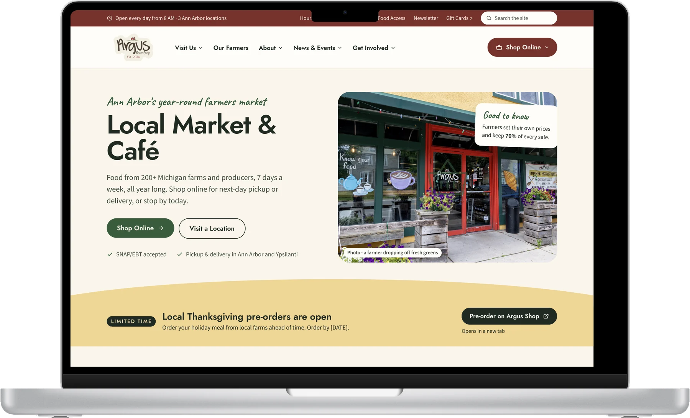
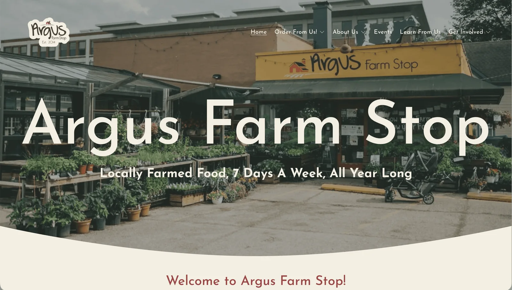
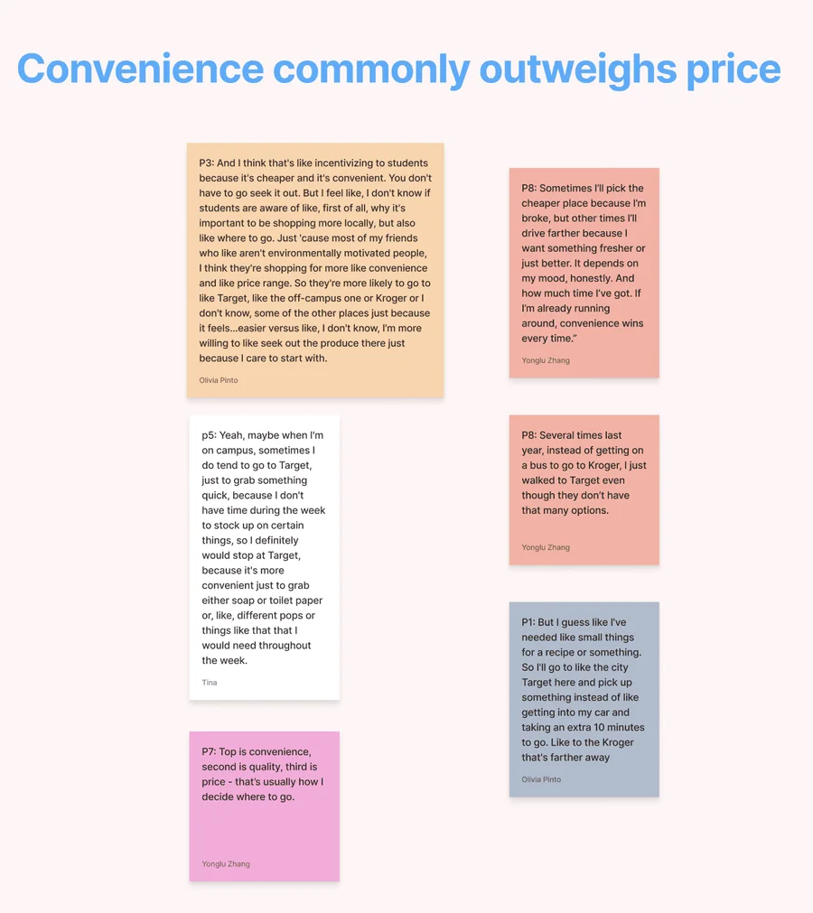
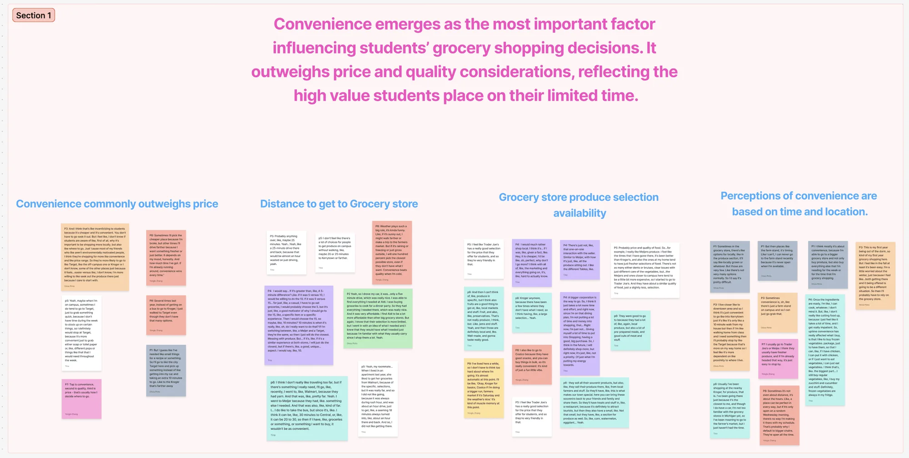
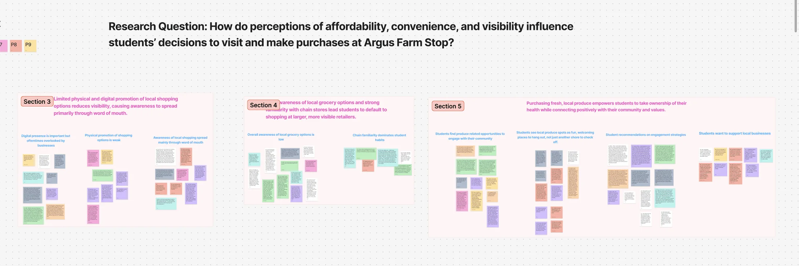
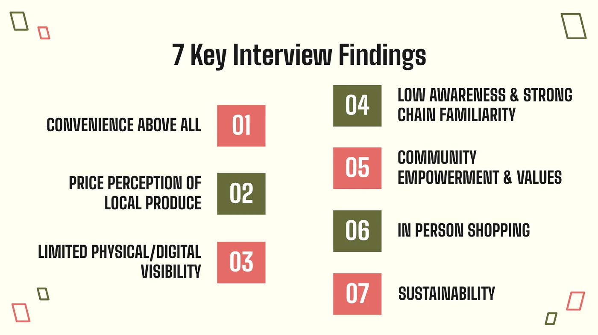
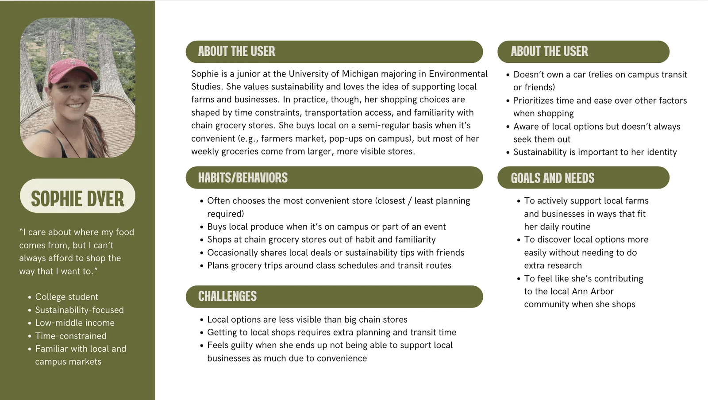
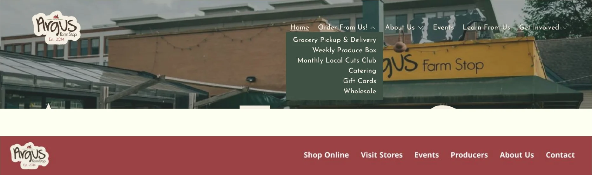
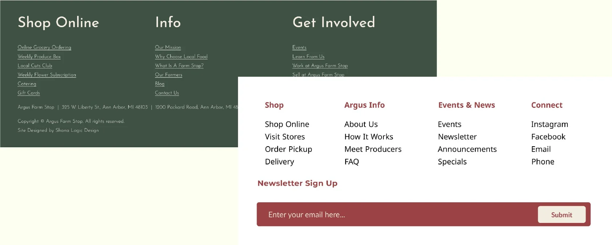
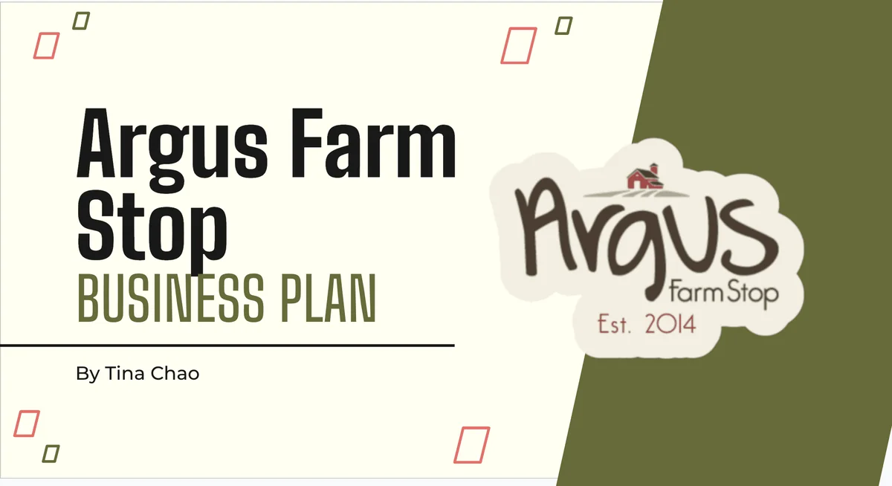

Say what you are, up front
The strongest sites described the business in the hero and gave a clear, immediate call to action.
Students cared about local food, but convenience, not price, quality, or even sustainability, decided where they shopped. I followed that finding from interviews and usability tests to a journey map, a landing-page redesign and recommendations for Argus, and now a redesign of the whole Argus website.

the problem
Argus had a strong local-food mission and 200+ Michigan farms and food producers on its shelves. But University of Michigan students weren't shopping there.
what I did
We interviewed 9 students, tested the site with 6 more over Zoom, and compared five competitors. I led the usability audit and the landing-page redesign, then mapped a student's journey to plan a redesign of the whole site.
where it stands
Our findings and recommendations went to Argus's marketing manager. The full-site redesign is in progress, with a second usability test planned on the same eight tasks.
I worked with two teammates. We split the sessions between us: I ran 3 of the 9 interviews and 2 of the 6 usability tests. We conducted the competitive analysis together, and I independently led the website usability audit and wireframe redesign. In fall 2026 I picked the project back up to redesign the rest of the site.
“It's hard to match your schedule.”
A student we interviewed
Argus Farm Stop is a year-round farmers market and café that's been serving Ann Arbor since 2014. Farmers drop off their food, set their own prices and keep 70% of every sale, so Argus can sell local food every day while the farmers stay on the farm. But despite its strong mission, University of Michigan students largely weren't shopping there.
This project started as a class assignment, but I wanted it to mean something beyond the grade. Before we began, I reached out to Argus Farm Stop directly to ask whether this was a problem they were actually facing and whether research like ours could be genuinely useful to them. That conversation shaped everything. It kept our work grounded in real organizational needs rather than hypothetical ones, and it gave me a stakeholder relationship to stay accountable to throughout the process.
Were students avoiding Argus because of affordability, convenience, visibility, or something else? We set out to answer:
the constraint
Argus takes orders on separate stores: the Argus Online Market on Localine, Argus Shop, and Square for gift cards. Only argusfarmstop.com was ours to change, so anything that happens inside those stores became a recommendation instead of a design.

We interviewed students, watched others use the website, and compared Argus with five competitors.



To see whether the website itself was part of the barrier, we ran moderated usability tests over Zoom with six University of Michigan students who grocery shop and had ordered groceries online before. Most were first-time visitors to the Argus site. They thought aloud while completing goal-based tasks, and we logged task success, time, errors, hesitations, and comments for each session. Argus provided $10 gift cards as participant incentives.
where tasks broke down
three issues came up again and again
Our clearest takeaway: even students who wanted to support Argus said the experience felt fragmented. One said they'd rather just shop in person.
I checked the existing site with the WAVE accessibility tool and a heuristic review, then benchmarked it against Agricole Farm Stop in Chelsea, MI. Agricole explains what it is in one sentence above the fold, with a five-item menu. Argus took scrolling to explain itself, behind six menu items with dropdowns, and its three main options were illustrated cards that didn't look clickable.
what competitors did better
The strongest sites described the business in the hero and gave a clear, immediate call to action.
Buy It Again, Favorites and Save for Later were standard elsewhere and missing from Argus.
Banners, deals and seasonal promotions gave shoppers a reason to look again. Argus had little of this.
Grids of farmers, real photos and short stories humanized the people behind the food.
Convenience emerged as the single most important factor in students' grocery decisions, outweighing both price and quality. Students shop where they can get in and out quickly, on foot or on their way to class. Even when they were sympathetic to shopping local, most assumed Argus would be more expensive than chain stores, a perception that often wasn't tested. And while students cared about sustainability and community, those values didn't reliably translate into behavior once time, money, and access got in the way.

Sophie doesn't need to be convinced that local food matters. If shopping local requires extra planning, she won't do it consistently. Every participant was a student, so I kept to one persona rather than inventing others the research couldn't support.

I mapped Sophie's journey from her usual grocery run to whether she comes back the next week, and tagged every pain point with the finding behind it. Her two lowest points both happen on the website: checking whether Argus is worth the trip, and picking how to shop. That's where design could help her most.
![Journey map for Sophie across six stages: weekly grocery run, hears about Argus, checks the website, picks how to shop, shops, and next week. Rows show what she does, what she's thinking, how she feels, touchpoints, pain points tagged with research findings, and how-might-we opportunities. Her feelings start neutral, rise to curious when she hears about Argus, drop to confused on the website and frustrated when picking how to shop, rise to good but price-conscious while shopping, and settle below neutral as habit wins the next week.](images/argus-journey.webp)
what we found
Convenience, not price or values, decided where students shopped.
how might we
How might we make Argus feel easier to choose?
If convenience was the strongest driver, the website couldn't make students work to understand why Argus was worth the trip.
For the class project, I redesigned the landing-page experience around three things students needed before deciding to visit: what Argus is, why it is worth choosing, and what they can expect when they get there. The redesign is at the top of this page.
| What we found | What I designed |
|---|---|
| Argus took scrolling to explain what it is | A hero that says it in one line: fresh local food from Michigan farmers, online or in-store |
| Six menu items with dropdowns | Five menu items and one Shop Now button |
| The main options were illustrated cards that didn't look clickable | Two clear buttons: Shop online and See store hours |
| The Farm Stop model needed explaining | A “How it works” section: three easy ways to get local food |
| Convenience decides where students shop | Pickup and delivery, open year-round, and Ann Arbor locations, right under the hero |
The menu and footer follow every visitor to every page, so I reworked those too: fewer layers to dig through, and labels that say where you'll end up.


still open
The landing page didn't fix everything we saw. Shopping happens on separate stores this project can't change, so the handoff, hidden subscriptions and farm-name links went into my recommendations instead. And one page can't carry a whole visit: after the first click, students still had to find subscriptions, same-day food, SNAP and the farmers on their own.
I delivered a formal research presentation to Argus Farm Stop's marketing manager, translating our UX findings into a prioritized set of actionable recommendations organized by impact and implementation effort.

A better first page wasn't enough. In testing, students got lost after the first click: between Argus and its stores, among the subscriptions, and looking for food they could get today. So I'm redesigning the rest of argusfarmstop.com, its navigation, pages and wording, so people can do everything the round 1 participants tried, without the trouble they ran into.
To move faster, I used AI (Claude) to draft wireframes for every page of the site. The drafts are a starting point, not the design: I'm going through them page by page, and each one has to answer to a finding or it goes.
questions the redesign has to answer
Round 2 reuses the same eight tasks with 5–6 new University of Michigan students over Zoom, so the two rounds compare directly. I'll count a fix as working when at least 5 of 6 participants complete its task without help, and no new problem shows up in two or more sessions.
| Task | Round 1 · live site | Round 2 · redesign |
|---|---|---|
| Start a weekly produce box | 4 of 6 (1 with help) | Testing soon |
| Find who grew the kale, and their website | About 1 of 6 | Testing soon |
| Find SNAP support | 5 of 6 | Testing soon |
| Buy meat monthly | 5 of 6 | Testing soon |
| Join the newsletter and comment on a blog post | 5 of 6 | Testing soon |
| Get ready-to-eat food today | 0 of 6 | Testing soon |
| Send a gift card by email | 6 of 6 | Testing soon |
| Find the vendors' share of each sale | 6 of 6 | Testing soon |
what's new in round 2
the plan
what I'd do differently
The $10 gift cards from Argus made recruiting easy: people said yes to giving us their time, and we never struggled to fill sessions. After LendMate, where we had no incentive and recruiting was hard, that difference stuck with me. Next time I'd also recruit students who already shop at Argus alongside ones who'd never heard of it, so we could build more than one student persona.
Thank you to my teammates Olivia Pinto and Lulu Zhang, and to Alex, Argus Farm Stop's marketing manager.
AI use: I used Claude (Anthropic) to draft wireframes for the full-site redesign, build the journey map from our findings, plan the second usability test, and help write this case study.
Reflection
I was surprised how many students already cared about shopping local. Caring was never the problem. Fitting it into a full week was.